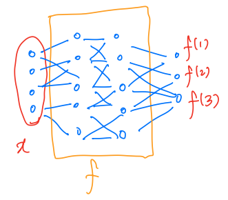

KL Divergence
& Cross-Entropy Loss
Why classifiers train on $\log 1/Q$
Albert No · Yonsei University
Fall 2026
Contents
Why Cross-Entropy?
The loss you already use
The Loss You Already Use
Every classifier you have trained ends here:
Default choice, everywhere. Rarely questioned.
Today's Question
Model outputs label probabilities $f(x)$; the loss is
- Why $\log$?
- Why the reciprocal?
- Any decreasing function of $f(x)_y$ penalizes wrong answers
Today: derive this loss, not accept it.
The Route
One theorem powers everything today:
Guessing, betting, training: same math, three costumes.
Recall & Teaser
Entropy, Jensen, the wrong pmf
Recall — Surprisal & Entropy
From Lecture 1: rare outcome = big surprise
- $H(X)$: expected surprisal, in bits
- Priced by the true pmf $p_X$
- Bounds: $0 \leq H(X) \leq \log M$
Recall — Jensen's Inequality
Recall (Jensen, Lecture 1).
For concave $f$:
Strictly concave $f$: equality iff $X$ is constant.
Recall — The Jensen Trick
Max-entropy proof pattern from Lecture 1:
- Move $\log$ outside the expectation
- Weight $p_X(x)$ cancels the value $1/p_X(x)$
Same two moves prove today's main theorem.
The Teaser — A Wrong Distribution
Surprisal used the true $p_X$. A model only has a guess $Q$:
- Outcomes still drawn from $p_X$
- Surprise priced by the wrong pmf $Q$
- Cheaper, or more expensive?
The Mismatch Theorem
The cost of guessing with $Q$
Intuition — Guessing with the Wrong Model
Surprise bill $\log 1/Q(x)$, but $x$ arrives with frequency $P(x)$
Expect: wrong beliefs can only raise the average bill.
Theorem — Mismatch
Theorem 1 (mismatch).
For any pmf $Q$ on $\mathcal{X}$:
Equality if and only if $Q = p_X$.
The true pmf is the unique cheapest pricing.
Example — Wrong Guess, Real Cost
Truth $P = (0.01,\, 0.99)$; model believes $Q = (0.1,\, 0.9)$
More than double the optimal bill, every draw.
Mismatch — Proof Overview
Target: the gap is never positive
- Merge the gap into one expectation of a log-ratio
- Jensen: move $\log$ outside
- Cancel: weight $p_X$ kills the ratio, $\sum_x Q(x) = 1$
Proof — Step 1: Merge the Gap
Both terms are expectations under $p_X$:
One expectation, one ratio: ready for Jensen.
Proof — Step 2: Jensen
$\log$ is concave: expectation of $\log$ $\leq$ $\log$ of expectation
Apply Jensen to the random variable $Z = \tfrac{Q(X)}{p_X(X)}$
Exactly the Lecture 1 move, new ratio inside.
Proof — Step 3: The Cancellation
Write the expectation as a sum; the weight cancels:
Proof — Equality Condition
Jensen (strictly concave $\log$) is tight iff the ratio is constant:
Both sum to one, so the constant is $c = 1$
Only the truth prices surprise at cost $H(X)$.
Exercise — The Edge Case
The proof cheats where $p_X(x) = 0$: the ratio divides by zero
Exercise. Prove Theorem 1 rigorously
- Hint 1: sum only over the support $\{x : p_X(x) \gt 0\}$
- Hint 2: then $\sum_{x:\, p_X(x) \gt 0} Q(x) \leq 1$, still fine
- Hint 3: equality now needs two inequalities tight
Mismatch — Proof Summary
- Key trick: expectation weight cancels the denominator
- Jensen direction from concavity of $\log$
- Tight iff $Q = p_X$
Definition — Cross-Entropy
Definition (cross-entropy).
The mismatch bill has a name:
Expected surprisal: outcomes from $P$, priced by $Q$
Two arguments "crossed": hence cross-entropy.
Implication — The Gap Deserves a Name
Every wrong model overpays; by how much?
The gap gets its own section.
KL Divergence
Definition, $D \geq 0$, asymmetry
Definition — KL Divergence
Definition (Kullback–Leibler divergence).
For pmfs $P$ and $Q$ on $\mathcal{X}$:
Also called relative entropy
Expected log-ratio of truth to model, weighted by truth.
Picture — Truth vs Model
$P = (0.5,\, 0.4,\, 0.1)$ against uniform $Q = (\tfrac13, \tfrac13, \tfrac13)$:
Blue solid = truth $P$; dashed = model $Q$.
Worked Example — $D(P \,\|\, Q)$ by Hand
$P = (0.5, 0.4, 0.1)$, $Q = (\tfrac13, \tfrac13, \tfrac13)$, term by term:
Negative terms allowed; the sum stays $\geq 0$
Uniform $Q$ shortcut: $D = \log 3 - H(P)$.
Worked Example — Swap the Arguments
Same pair, opposite direction:
Divergence, Not Distance
- Not symmetric: $D(P \| Q) \neq D(Q \| P)$ (just computed)
- No triangle inequality either
- Still: $D \geq 0$, and $D = 0$ iff $P = Q$
Distance-like separation without distance axioms: hence divergence.
Which argument holds the truth matters. Keep track.
Theorem — Non-Negativity of KL
Theorem 2 (information inequality).
For any pmfs $P, Q$ on $\mathcal{X}$:
Equality if and only if $P = Q$.
A "distance" that could go negative would be useless.
Proof — Already Done
The mismatch proof bounded exactly $-D(P \,\|\, Q)$:
Equality: Jensen tight iff $Q/P$ constant iff $P = Q$
Theorem 1 and Theorem 2 are the same fact.
The Gap, Named
Split the log-ratio inside cross-entropy:
Cross-entropy = entropy + KL. The mismatch gap is the KL divergence.
Implication — KL Across AI
- Classification: cross-entropy loss (Section 06 today)
- Generative models: pull model pmf toward data pmf (GANs)
- Compression / gambling: overpay rate (next section)
Gambling & Doubling Rate
Optimal betting = proportional betting
Setup — Red or Black
After the bet: $S = 2qB$ if red, $S = 2(1-q)B$ if black
First Try — Maximize $\mathbb{E}[S]$
- Linear in $q$, slope $2B(2p - 1) \lt 0$
- Maximized at $q = 0$: all-in on black
Expected value says: bet everything on the favorite.
Why All-In Fails
Repeat the all-in strategy: first red = total ruin
Eventually broke, with probability one
Fix — Maximize $\mathbb{E}[\log S]$
Score wealth on the $\log$ scale:
- $\log 0 = -\infty$: ruin gets infinite penalty
- Forces strategies that never go broke
- Log-wealth adds over repeated bets: growth rate
Compute $\mathbb{E}[\log S]$
The bracket is a cross-entropy: truth $(p, 1-p)$, priced by $(q, 1-q)$
We already know its minimizer.
Theorem — Proportional Betting
Theorem 3 (proportional betting).
In the binary game with odds 2, $\mathbb{E}[\log S]$ is maximized iff $q = p$:
Bet fraction $p$ on red, $1-p$ on black
Bet your beliefs, in exact proportion.
Proof — Mismatch in Disguise
Cross-entropy = entropy + KL, applied to the bracket:
Only the last term depends on $q$; $D \geq 0$, zero iff $q = p$ $\;\blacksquare$
Theorem 1 did all the work.
Cost of Mismatch = KL
Betting $(q, 1-q)$ instead of the optimal $(p, 1-p)$ loses
KL divergence = log-wealth lost per bet to a wrong belief.
Definition — Doubling Rate
Definition (doubling rate).
Repeat $n$ bets: $\;S_n \approx B \times 2^{nW}$
Log-wealth grows linearly, at slope $W$ bits per bet.
Picture — Growth at Rate $W$
On the log scale, strategies are straight lines with slope $W$
Horse Racing — $M$ Horses
Horse $i$ wins with probability $p_X(i)$; odds $M$-for-1 on every horse
Winner takes all: $S = M\, Q(i)\, B$ when horse $i$ wins
Theorem — Optimal Horse Betting
Theorem 4 (proportional betting, $M$ horses).
Maximized iff $Q = p_X$; the loss for betting $Q$ is $D(p_X \,\|\, Q)$
Same statement, $M$ outcomes instead of 2.
Proof — Same Two Moves
Only $D$ depends on $Q$: doubling rate $W(Q) = \log M - H(p_X) - D(p_X \| Q)$
Worked Example — A 3-Horse Race
Win probabilities $p = (\tfrac12, \tfrac14, \tfrac14)$; odds 3-for-1
- Optimal bet: $Q = p$, i.e. $(\tfrac12, \tfrac14, \tfrac14)$ of the budget
- 100 races: wealth $\times\, 2^{8.5} \approx 362$
Worked Example — Three Gamblers
| Bet $Q$ | $D(p \,\|\, Q)$ | $W = W^* - D$ | After 100 races |
|---|---|---|---|
| $(\tfrac12, \tfrac14, \tfrac14) = p$ | $0$ | $+0.085$ | $\times\, 362$ |
| $(\tfrac13, \tfrac13, \tfrac13)$ | $0.085$ | $0$ | $\times\, 1$ |
| $(\tfrac14, \tfrac14, \tfrac12)$ | $0.25$ | $-0.165$ | $\times\, 1/93000$ |
Same race, same odds: beliefs alone separate rich from ruined.
Implication — Betting = Modeling
- Optimal gambler = gambler with the true model
- $D(p \,\|\, Q)$: exponential rate of lost wealth
- Same $D$ that priced the guessing bill
A classifier also "bets" a distribution on labels: same penalty, next section.
Cross-Entropy Loss
CE = entropy + KL
Setup — Classification

- Input $x \in \mathcal{X}$ (e.g. $\mathbb{R}^n$)
- Label $y \in [M] = \{1, \dots, M\}$
- Classifier $f$: outputs a pmf over labels
$f(x)_i$: believed probability of label $i$.
The Classifier Bets a Distribution
Loss = mismatch between the bet $Q$ and the truth $P$.
Definition — Cross-Entropy Loss
Definition (cross-entropy loss).
For prediction $f(x)$ and true label $y$:
Surprisal of the true label under the model's pmf
More belief on the truth: lower loss. But why this shape?
Worked Example — 3-Class Loss
True label $y = \text{cat}$; three models bet:
| Model | Bet on (cat, dog, ship) | Loss to true label |
|---|---|---|
| confident, right | $(0.99,\, 0.005,\, 0.005)$ | $0.014$ bits |
| decent | $(0.7,\, 0.2,\, 0.1)$ | $0.515$ bits |
| confused | $(0.3,\, 0.4,\, 0.3)$ | $1.737$ bits |
Only the true label's column enters the loss.
A Weird-Looking Function
Any decreasing function of $f(x)_y$ rewards the truth:
- "Higher belief on truth = lower loss": all of them qualify
- So why the $\log$ and the reciprocal?
Claim: the third one is a KL divergence in disguise.
One-Hot Label = A Distribution
Definition (one-hot vector).
A valid pmf on $[M]$: the ground-truth distribution, deterministic at $y$
Now both objects are pmfs: truth $y^{(o)}$ vs model $f(x)$
Natural performance measure: their KL divergence.
Theorem — CE Loss = KL to the Truth
Theorem 5 (cross-entropy loss is a KL divergence).
The loss is the divergence from the model's pmf to the one-hot truth
Truth in the first slot: the asymmetry matters.
Proof — Compute the KL
Terms with $y^{(o)}_i = 0$ vanish, since $0 \log 0 = 0$:
One surviving term: the true label's surprisal.
Theorem — CE = Entropy + KL
Theorem 6 (cross-entropy decomposition).
For any pmfs $P, Q$ on $[M]$:
The mismatch theorem, now as an exact identity.
Proof — Split the Log-Ratio
Soft Labels — Same Story
True label a soft pmf $y^{(\text{soft})}$ (label smoothing, distillation):
Numbers: $y^{(\text{soft})} = (0.6, 0.3, 0.1)$, model $f(x) = (0.7, 0.2, 0.1)$
One-hot case: $H(y^{(o)}) = 0$, so CE $=$ KL exactly.
Punchline — Min CE = Min KL
The label term $H(P)$ is fixed by the data: no $Q$ inside
Training with CE loss = pulling $f(x)$ toward the truth, measured in KL.
Implication — Why Log, Why Reciprocal
- $\log 1/Q$ is surprisal: the guessing / coding / betting cost
- CE differs from KL by a constant: same minimizer
- Log base = overall scale only (bits vs nats): same minimizer
- Zero loss achievable iff $f(x) = y^{(o)}$ exactly
Questions We Leave Open
- Why measure "distance" between pmfs this way?
- Other divergences exist: what makes KL special?
- KL runs deeper: GAN training is a divergence game
Good discomfort. The definitions will keep earning their keep.
Recap — Today's Chain
- Wrong pmf overpays: exactly $D(P \| Q)$ bits
- Betting: proportional is optimal; mismatch costs KL
- CE training minimizes KL to the label
Next — Two Random Variables
So far one RV at a time: $H(X)$, $D(P \| Q)$. But data comes in pairs:
- How much does $Y$ tell us about $X$?
- How much uncertainty remains after seeing $Y$?
Next lecture: joint entropy, conditional entropy, mutual information.
Questions?